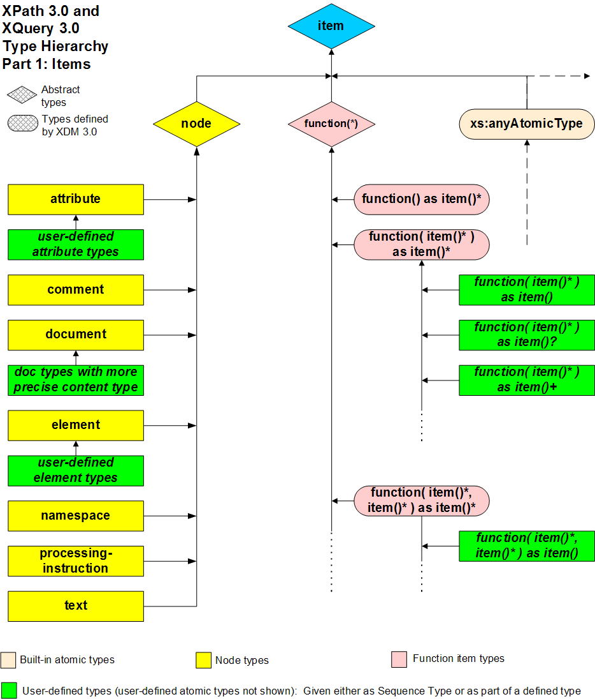
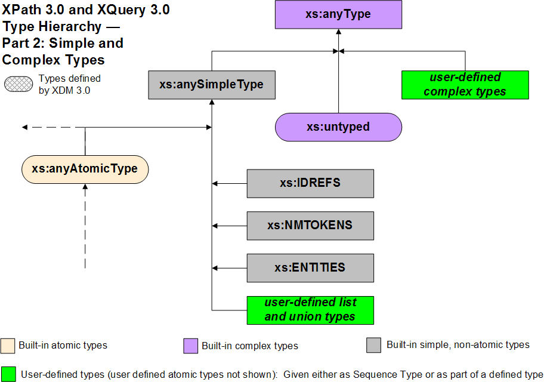

- ! simple map operator
-
In the expression E1 ! E2, where E1 is any sequence of items and E2 is a sequence of items, the simple map operator, !, provides a compact notation for iterating over the items in E1 and applying each one as input to the next evaluation of E2. For example,
child::div1 / child::para / string() ! concat("id-", .)
Selects the para element children of the div1 element children of the context node; that is the para element grandchildren of the context node that have div1 parents. It then outputs the strings obtained by prepending "id-" to each of the string values of these grandchildren.
The result at each step of applying the simple map operator can be chained to additional expressions:
(1 to 5) ! (. + 1) ! (. * 2)
returns:
(4, 6, 8, 10, 12)
Each operation E1 ! E2 is evaluated as follows: Expression E1 is evaluated to a sequence S. Each item in S then serves in turn to provide an inner focus (the item as the context item, its position in S as the context position, the length of S as the context size) for an evaluation of E2 in the dynamic context. The sequences resulting from all the evaluations of E2 are combined as follows: Every evaluation of E2 returns a (possibly empty) sequence of items. These sequences are concatenated and returned. If ordering mode is ordered, the returned sequence preserves the orderings within and among the subsequences generated by the evaluations of E2; otherwise the order of the returned sequence is implementation-dependent.
Simple map operators have functionality similar to path operator (/). The following table summarizes the differences between these two operators.
| Operator |
Path operator (E1 / E2) |
Simple map operator (E1 ! E2) |
| E1 |
Any sequence of nodes |
Any sequence of items |
| E2 |
Either a sequence of nodes or a sequence of non-node items |
A sequence of items |
| Additional processing |
Duplicate elimination and document ordering |
Simple sequence concatenation |
3.15 Simple map operator (!)—XML Path Language (XPath) 3.1; 18 December 2014
path operator (/)
map function
- != not equal
-
The general comparison operator, !=, is a binary operator that tests for non-equality of operand sequences of any length, and returns a xs:boolean result.
After atomization and various conversions are performing on the two sequences, the atomic values are compared using the ge value comparison operator. Therefore the items that make up the sequences must be consistant with the datatypes that can be converted by the ge operator.
The = and != operators are not inverses of each other.
Editor
= equal
operator
3.7.2 General Comparisons—XML Path Language (XPath) 3.1; 18 December 2014
- # number sign
-
The Unicode number sign (U+0023) is used in a named function reference to mark the arity of the function, for example, .
—XML Path Language (XPath) 3.0; 08 April 2014
delimiting terminal symbol
arity
- $ variable reference
-
The value of a variable (local or global variable, local or global parameter) may be referred to using the construct $name, where name is the variable name.
A variable is declared and bound to a value using the let keyword.
The variable is always evaluated at the textual place where the expression containing it appears; for example a variable used within an xsl:attribute-set must be in scope at the point where the attribute-set is defined, not the point where it is used.
A variable may take a value of any data type (string, number, boolean, node-set, or result-tree-fragment), and in general it is not possible to determine its data type statically.
It is an error to refer to a variable that has not been declared.
Two variable references are equivalent if their expanded QNames are equal (as defined by the eq operator). The scope of a variable binding is defined separately for each kind of expression that can bind variables.
Every variable binding has a static scope. The scope defines where references to the variable can validly occur. It is a static error [err:XPST0008] to reference a variable that is not in scope. If a variable is bound in the static context for an expression, that variable is in scope for the entire expression except where it is occluded by another binding that uses the same name within that scope.
At evaluation time, the value of a variable reference is the value to which the relevant variable is bound.
3.1.2 Variable References
mapping operator
3.10 Let Expressions
3.1.2 Variable References—XML Path Language (XPath) 3.0; 08 April 2014
delimiting terminal symbol
- ( ) parenthesis
-
The left and right parenthesis are used in the contexts of Parenthesized Expressions, Static Function calls, and the empty-sequence.
Parenthesized Expressions
Parentheses may be used to override the precedence rules. For example, the expression
(2 + 4) * 5
evaluates to thirty, since the parenthesized expression
(2 + 4)
is evaluated first and its result is multiplied by five. Without parentheses, the expression
2 + 4 * 5
evaluates to twenty-two, because the multiplication operator has higher precedence than the addition operator.
Empty parentheses are used to denote an empty sequence, as described in 3.4.1 Constructing Sequences.
Static Function Calls
A static function call consists of an EQName followed by an ArgumentList. The argument list consists of an opening parenthesis, an optional list of one or more arguments (separated by commas), and a closing parenthesis.
[ ] square brackets
delimiting terminal symbol
- * asterisk
-
The delimiting terminal symbol, *, find application in the following contexts:
-
Multiplication operator in arithmetic and path expressions
-
Occurence operator
-
Wildcard operator to test for an attribute node (see
AttributeTest)
-
Wildcard operator to test for an element (see
ElementTest)
-
Wildcard operator to test for any function (see
AnyFunctionTest)
Arithmetic multiplication
XPath 3.0 provides arithmetic operators for addition, subtraction, multiplication, division, and modulus, in their usual binary and unary forms.
The following table enumerates the specific datatype combinations that can be used with the * operator, the function that implements the semantics for that operand combination and the return type.
| Type A |
Type B |
Function |
Result |
| numeric |
numeric |
op:numeric-multiply(A, B) |
numeric |
| numeric |
xs:dayTimeDuration |
op:multiply-dayTimeDuration(B, A) |
xs:dayTimeDuration |
| numeric |
xs:yearMonthDuration |
op:multiply-yearMonthDuration(B, A) |
xs:yearMonthDuration |
| xs:dayTimeDuration |
numeric |
op:multiply-dayTimeDuration(A, B) |
xs:dayTimeDuration |
| xs:yearMonthDuration |
numeric |
op:multiply-yearMonthDuration(A, B) |
xs:yearMonthDuration |
Wildcard
"*" is both the multiply operator and a wildcard in path expressions. This can cause parsing difficulties when "/" appears on the left-hand side of "*". This is resolved using the leading-lone-slash constraint. For example, "/*" and "/ *" are valid path expressions containing wildcards, but "/*5" and "/ * 5" raise syntax errors. Parentheses must be used when "/" is used on the left-hand side of an operator, as in "(/) * 5". Similarly, "4 + / * 5" raises a syntax error, but "4 + (/) * 5" is a valid expression. The expression "4 + /" is also valid, because / does not occur on the left-hand side of the operator.
Similarly, in the expression / union /*, "union" is interpreted as an element name rather than an operator. For it to be parsed as an operator, the expression should be written (/) union /*.
3.3.5 Abbreviated Syntax—XML Path Language (XPath) 3.0; 08 April 2014
Operator Uses (*)
- + plus sign
-
There are three different interpretations for the Unicode plus sign (U+002B) in XPath 3.0: Arithmetic addition, Unary plus and Occurrence.
Arithmetic addition
XPath 3.0 provides arithmetic operators for addition in their usual binary and unary forms.
The basic rules for addition are not set out in the XPath specification; they are taken as given.
The following table enumerates the specific datatype combinations that can be used with the + operator, the function that implements the semantics for that operand combination and the return type.
| Type A |
Type B |
Function |
Result Type |
| numeric |
numeric |
op:numeric-add(A, B) |
numeric |
| xs:date |
xs:dayTimeDuration |
op:add-dayTimeDuration-to-date(A, B) |
xs:date |
| xs:date |
xs:yearMonthDuration |
op:add-yearMonthDuration-to-date(A, B) |
xs:date |
| xs:dateTime |
xs:dayTimeDuration |
op:add-dayTimeDuration-to-dateTime(A, B) |
xs:dateTime |
| xs:dateTime |
xs:yearMonthDuration |
op:add-yearMonthDuration-to-dateTime(A, B) |
xs:dateTime |
| xs:dayTimeDuration |
xs:date |
op:add-dayTimeDuration-to-date(B, A) |
xs:date |
| xs:dayTimeDuration |
xs:dateTime |
op:add-dayTimeDuration-to-dateTime(B, A) |
xs:dateTime |
| xs:dayTimeDuration |
xs:dayTimeDuration |
op:add-dayTimeDurations(A, B) |
xs:dayTimeDuration |
| xs:dayTimeDuration |
xs:time |
op:add-dayTimeDuration-to-time(B, A) |
xs:time |
| xs:time |
xs:dayTimeDuration |
op:add-dayTimeDuration-to-time(A, B) |
xs:time |
| xs:yearMonthDuration |
xs:date |
op:add-yearMonthDuration-to-date(B, A) |
xs:date |
| xs:yearMonthDuration |
xs:dateTime |
op:add-yearMonthDuration-to-dateTime(B, A) |
xs:dateTime |
| xs:yearMonthDuration |
xs:yearMonthDuration |
op:add-yearMonthDurations(A, B) |
xs:yearMonthDuration |
If an AdditiveExpr contains more than two MultiplicativeExprs, they are grouped from left to right. So, for instance,
A - B + C - D
is equivalent to
((A - B) + C) - D
Unary plus
The + (unary plus) operator maintains the value of the operand. The operand can have any item type. type.
Unary operators have higher precedence than binary operators, subject of course to the use of parentheses.
Multiple consecutive unary arithmetic operators are permitted by XPath 3.0 for compatibility with XML Path Language (XPath) Version 1.0.
Unary operators have higher precedence than binary operators, subject of course to the use of parentheses. Therefore, the following two examples have different meanings:
-$bellcost + $whistlecost
-($bellcost + $whistlecost)
Occurence
The sub-pattern A+ matches one or more occurrences of A.
Concatenation has higher precedence than alternation; thus A+ | B+ is identical to (A+) | (B+).
Constraint: occurrence-indicators
As written, the grammar in A XPath 3.0 Grammar is ambiguous for some forms using the '+' and '*' Kleene operators. The ambiguity is resolved as follows: these operators are tightly bound to the SequenceType expression, and have higher precedence than other uses of these symbols. Any occurrence of '+' and '*', as well as '?', following a sequence type is assumed to be an occurrence indicator, which binds to the last ItemType in the SequenceType.
– minus sign
- , comma
-
See comma operator.
- – minus sign
-
There are two different interpretations for the ASCII hyphen-minus (-) in XPath 3.0: Arithmetic subtraction and Unary minus (negation).
Aritmetic Subtraction
XPath 3.0 provides arithmetic operators for addition, subtraction, multiplication, division, and modulus, in their usual binary and unary forms.
A subtraction operator must be preceded by whitespace if it could otherwise be interpreted as part of the previous token. For example, a-b will be interpreted as a name, but a - b and a -b will be interpreted as arithmetic expressions.
Subtraction of two date values results in a value of type xs:dayTimeDuration
$emp/hiredate - $emp/birthdate
The following example illustrates the difference between a subtraction operator and a hyphen:
$unit-price - $unit-discount
The following table enumerates the specific datatype combinations that can be used with the - operator, the function that implements the semantics for that operand combination and the return type.
| Type A |
Type B |
Function |
Result |
| numeric |
numeric |
numeric op:numeric-subtract(A, B) |
numeric |
| xs:date |
xs:date |
op:subtract-dates(A, B) |
xs:dayTimeDuration |
| xs:date |
xs:dayTimeDuration |
op:subtract-dayTimeDuration-from-date(A, B) |
xs:date |
| xs:date |
xs:yearMonthDuration |
op:subtract-yearMonthDuration-from-date(A, B) |
xs:date |
| xs:dateTime |
xs:dateTime |
op:subtract-dateTimes(A, B) |
xs:dayTimeDuration |
| xs:dateTime |
xs:dayTimeDuration |
op:subtract-dayTimeDuration-from-dateTime(A, B) |
xs:dateTime |
| xs:dateTime |
xs:yearMonthDuration |
op:subtract-yearMonthDuration-from-dateTime(A, B) |
xs:dateTime |
| xs:dayTimeDuration |
xs:dayTimeDuration |
op:subtract-dayTimeDurations(A, B) |
xs:dayTimeDuration |
| xs:time |
xs:dayTimeDuration |
op:subtract-dayTimeDuration-from-time(A, B) |
xs:time |
| xs:time |
xs:time |
op:subtract-times(A, B) |
xs:dayTimeDuration |
| xs:yearMonthDuration |
xs:yearMonthDuration |
op:subtract-yearMonthDurations(A, B) |
xs:yearMonthDuration |
If an AdditiveExpr contains more than two MultiplicativeExprs, they are grouped from left to right. So, for instance,
A - B + C - D
is equivalent to
((A - B) + C) - D
Unary minus
The - (unary minus) operator negates the value of the operand. The operand can have any arithmetic type. The result is not an lvalue.
For example, if quality has the value 100, -quality has the value -100.
The result has the same type as the operand after integral promotion.
Precedence
Unary operators have higher precedence than binary operators, subject of course to the use of parentheses. Therefore, the following two examples have different meanings:
-$bellcost + $whistlecost
-($bellcost + $whistlecost)
Xpath 1.0 Compatibility Mode
In XPath 1.0, the expression -x|y parsed as -(x|y), and returned the negation of the numeric value of the first node in the union of x and y. In XPath 3.0, this expression parses as (-x)|y. When XPath 1.0 Compatibility Mode is false, this will cause a type error, except in the situation where x evaluates to an empty sequence. In that situation, XPath 3.0 will return the value of y, whereas XPath 1.0 returned the negation of the numeric value of y.
- —XML Path Language (XPath) 2.0 (Second Edition); 14 December 2010
+ plus sign
- Hyphen-minus—Wikipedia
- —XML Path Language (XPath) 3.0; 08 April 2014
- —XQuery and XPath Data Model 3.0; 08 April 2014
- —XPath and XQuery Functions and Operators 3.1; 18 December 2014
- . dot
-
The context item is returned by an expression consisting of a single dot ".". When an expression E1/E2 or E1[E2] is evaluated, each item in the sequence obtained by evaluating E1 becomes the context item in the inner focus for an evaluation of E2.
The single dot (.) is equivalent to the Unicode full stop (U+002E).
3.3.5 Abbreviated Syntax—XML Path Language (XPath) 3.0; 08 April 2014
delimiting terminal symbol
- .. parent axis
-
3.3.5 Abbreviated Syntax—XML Path Language (XPath) 3.0; 08 April 2014
- / path operator
-
The Unicode solidus (U+002F) can be used either as a complete path expression or as the beginning of a longer path expression such as "/*".
A "/" at the beginning of a path expression (note a step) is an abbreviation for the root node, equivalent to: fn:root(self::node()), and document-node()/. However, if the "/" is the entire path expression, the trailing "/" is omitted from the expansion. The effect of this initial step is to begin the path at the root node of the tree that contains the context node. If the context item is not a node, a type error is raised [err:XPTY0020]. At evaluation time, if the root node above the context node is not a document node, a dynamic error is raised [err:XPDY0050].
The abbreviation, /, is not an axis abbreviation and doesn't produce any useful result by itself when evaluated except to set the value of the self axis to the root node and signal our intention to form a path expression anchored to the absolute root of the document.
Example
To illustrate a complete example using the abbreviated syntax for the root node, the following sample XML and node map is offered as a reference to the examples which follow:
Sample XML
<library>
<book>
<title>
I love XPath
</title>
<title>
XPath is the BEST
</title>
</book>
</library>
Sample node map
root
|
element: <library>
|
element: <book>
|
|-----------------------|
| |
element: <title> element: <title>
| |
text: "I Love XPath" text: "XPath is the BEST"
// descendant-or-self axis- ! simple map operator
expression
- // descendant-or-self axis
-
A "//" at the beginning of a path expression is an abbreviation for the initial steps (fn:root(self::node()) treat as document-node())/descendant-or-self::node()/ (however, "//" by itself is not a valid path expression [err:XPST0003].) The effect of these initial steps is to establish an initial node sequence that contains the root of the tree in which the context node is found, plus all nodes descended from this root. This node sequence is used as the input to subsequent steps in the path expression. If the context item is not a node, a type error is raised [err:XPTY0020]. At evaluation time, if the root node above the context node is not a document node, a dynamic error is raised [err:XPDY0050].
3.3 Path Expressions—XML Path Language (XPath) 3.0; 08 April 2014
/
expression
- ; semicolon
-
The Unicode semicolon (U+003B) is the default pattern-separator-sign, that separates positive and negative sub-pictures in a picture string.
2.1.1 Static Context—XML Path Language (XPath) 3.1; 18 December 2014
- : colon
-
The Unicode colon (U+003A) is used in the context of Lexical QNames and Map Functions.
Lexical QNames
The colon is the delimiting terminal symbol that separates the namespace prefix from the local name in a lexical QName.
Names in XPath 3.1 can be bound to namespaces, and are based on the syntax and semantics defined in XML Names.
Maps
The colon is the delimiting terminal symbol that separates key / value pairs in a map.
In some circumstances, it is necessary to include whitespace before or after the colon to ensure that this grammar is correctly parsed; this arises for example when the MapKeyExpr ends with a name and the MapValueExpr starts with a name.
2 Basics—XML Path Language (XPath) 3.1; 18 December 2014
:: double colon
- :: double colon
-
The double colon is the delimiting terminal symbol used in the unabbreviated syntax for a step to separate the axis name from a node test.
3.3.5 Abbreviated Syntax—XML Path Language (XPath) 3.0; 08 April 2014
: colon
delimiting terminal symbol
- := binding sequence
-
XPath allows a variable to be declared and bound to a value using a let expression (LetExpr). A let expression is evaluated as follows:
-
If the let expression uses multiple variables, it is first expanded to a set of nested let expressions, each of which uses only one variable. For example, the expression:
let $x := 4, $y := 3 return $x + $y
is expanded to:
let $x := 4 return let $y := 3 return $x + $y
-
In a single-variable let expression, the variable is called the range variable, the value of the expression that follows the
:= symbol is called the binding sequence, and the expression that follows the return keyword is called the return expression. The result of the let expression is obtained by evaluating the return expression with the range variable bound to the binding sequence.
The scope of a variable bound in a let expression comprises all subexpressions of the let expression that appear after the variable binding. The scope does not include the expression to which the variable is bound. The following example illustrates how a variable binding may reference another variable bound earlier in the same let expression:
let $x := doc('a.xml')/*, $y := $x//*
return $y[@value gt $x/@min]
3.10 Let Expressions—XML Path Language (XPath) 3.1; 18 December 2014
- < less than
-
The general comparison operator, <, is a binary operator that tests the magnitude relationship of two sequences of any length, and returns a xs:boolean result.
After atomization and various conversions are performing on the two sequences, the atomic values are compared using the lt value comparison operator. Therefore the items that make up the sequences must be consistant with the datatypes that can be converted by the lt operator.
Editor
operator
3.7.2 General Comparisons—XML Path Language (XPath) 3.1; 18 December 2014
- << node comparison
-
The delimiting terminal symbol, <<, finds application in node comparison expressions.
Editor
>>
3.7.3 Node Comparisons—XML Path Language (XPath) 3.1; 18 December 2014
- <= less than or equal
-
The general comparison operator, <, is a binary operator that tests the magnitude relationship of two sequences of any length, and returns a xs:boolean result.
After atomization and various conversions are performing on the two sequences, the atomic values are compared using the le value comparison operator. Therefore the items that make up the sequences must be consistant with the datatypes that can be converted by the le operator.
Editor
operator
3.7.2 General Comparisons—XML Path Language (XPath) 3.1; 18 December 2014
- = equal
-
The general comparison operator, =, is a binary operator that tests for the equality of two sequences of any length, and returns an xs:boolean result.
After atomization and various conversions are performed on the two sequences, the atomic values are compared using the eq value comparison operator. Therefore the items that make up the sequences must be consistant with the datatypes that can be converted by the eq operator.
Editor
operator
3.7.2 General Comparisons—XML Path Language (XPath) 3.1; 18 December 2014
- > greater than
-
The general comparison operator, >, is a binary operator that tests the magnitude relationship of two sequences of any length, and returns a xs:boolean result.
After atomization and various conversions are performed on the two sequences, the atomic values are compared using the gt value comparison operator.
Editor
operator
3.7.2 General Comparisons—XML Path Language (XPath) 3.1; 18 December 2014
- >= greater than or equal
-
The general comparison operator, <, is a binary operator that tests the magnitude relationship of two sequences of any length, and returns a xs:boolean result.
After atomization various conversions are performing on the two sequences, the atomic values are compared using the ge value comparison operator. Therefore the items that make up the sequences must be consistant with the datatypes that can be converted by the ge operator.
Editor
operator
3.7.2 General Comparisons—XML Path Language (XPath) 3.1; 18 December 2014
- >> node comparison
-
The delimiting terminal symbol, >>, finds application in node comparison expressions.
Editor
<<
3.7.3 Node Comparisons—XML Path Language (XPath) 3.1; 18 December 2014
- ? question mark
-
The delimiting terminal symbol, ?, finds appliction in three areas:
-
Occurance indicator—to specify that a sequence type expression is optional
-
Lookup Operator for maps and arrays
-
Argument placeholder in function signatures
Occurance Indicator
When ? follows an expression, a match occurs whether the sequence type represented by the expression exists or not.
Lookup Operator
-
is equivalent to .("name"), an appropriate lookup for a map.
?name
-
is equivalent to .(2), an appropriate lookup for an array or an integer-valued map.
?2
-
is equivalent to for $k in $a return .($k), allowing keys for an array or map to be passed using a variable.
?($a)
-
s equivalent to for $k in (2,3,4) return .($k), a convenient way to return a range of values from an array.
?(2 to 4)
-
raises a type error because the parameter must be an integer.
?(3.5)
-
does not raise a type error because the attribute is untyped.
But let $x:= return ?($x/@i+1) does raise a type error because the + operator with an untyped operand returns a double.
let $x:= return ?($x/@i)
-
raises an error because ?3 on one of the items in the sequence fails.
([1,2,3], [1,2,5], [1,2])[?3 = 5]
Argument Placeholder
(see ArgumentPlaceholder):
Some functions accept a single value or the empty sequence as an argument and some may return a single value or the empty sequence. This is indicated in the function signature by following the parameter or return type name with a question mark: "?", indicating that either a single value or the empty sequence must appear.
occurrence indicator
- —XML Path Language (XPath) 1.0; 16 November 1999
- —XML Path Language (XPath) 2.0 (Second Edition); 14 December 2010
- —XML Path Language (XPath) 3.0; 08 April 2014
- @ attribute axis
-
The attribute axis, attribute, can be abbreviated with the at sign, @. For example, the path expression:
para[@type="warning"]
is short for:
child::para[attribute::type="warning"]
and so selects para children with a type attribute with value equal to warning.
3.3.5 Abbreviated Syntax—XML Path Language (XPath) 3.0; 08 April 2014
- [ ] square brackets
-
In XPath, the left (unicode u+005B) and right (unicode u+005D) square brackets find application in the context of the Square array constructor and filter expressions.
Editor
{ } curly brackets
delimiting terminal symbol
- { } curly brackets
-
In XPath, the left (unicode u+007B) and right (unicode u+007D) curly brackets find application in the context of the Curly array constructor.
Editor
[ ] square brackets
delimiting terminal symbol
- | union
-
The deliming terminal symbol, |, takes two node sequences as operands and returns a sequence containing all the nodes that occur in either of the operands. The inputs and result are modeled by node()* in the operator mapping table, and symantics by the function, op:union(A, B).
The union and | operators are equivalent.
The following examples illustrate expressions that combine sequences:
—XML Path Language (XPath) 3.0; 08 April 2014
—XPath and XQuery Functions and Operators 3.1; 18 December 2014
- || string concatenation
-
String concatenation expressions allow the string representations of values to be concatenated. In XPath 3.1,
$a || $b
is equivalent to:
fn:concat($a, $b)
The following expression evaluates to the string, "concatenate":
"con" || "cat" || "enate"
3.6 String Concatenation Expressions—XML Path Language (XPath) 3.1; 18 December 2014
- abbreviated forward step
-
An abbreviated forward step (AbbrevForwardStep) is the abbreviated attribute axis, @ (attribute::), or a node test (NodeTest).
- abbreviated forward step
-
@ o a node test (NodeTest).
- abbreviated syntax
-
The abbreviated syntax permits the following abbreviations:
-
The attribute axis
attribute:: can be abbreviated by @. For example, a path expression para[@type="warning"] is short for child::para[attribute::type="warning"] and so selects para children with a type attribute with value equal to warning.
-
If the axis name is omitted from an axis step, the default axis is child, with two exceptions: if the NodeTest in an axis step contains an AttributeTest or SchemaAttributeTest then the default axis is attribute; if the NodeTest in an axis step is a NamespaceNodeTest then a static error is raised [err:XQST0134].
In an implementation that does not support the namespace axis, an attempt to access it always raises an error. Thus, an XQuery implementation will always raise an error in this case, since XQuery does not support the namespace axis. The namespace axis is deprecated as of XPath 2.0, but required in some languages that use XPath, including XSLT.
For example, the path expression section/para is an abbreviation for child::section/child::para, and the path expression section/@id is an abbreviation for child::section/attribute::id. Similarly, section/attribute(id) is an abbreviation for child::section/attribute::attribute(id). Note that the latter expression contains both an axis specification and a node test.
-
Each non-initial occurrence of // is effectively replaced by /descendant-or-self::node()/ during processing of a path expression. For example, div1//para is short for child::div1/descendant-or-self::node()/child::para and so will select all para descendants of div1 children.
The path expression para children of their respective parents.
-
A step consisting of
.. is short for parent::node(). For example, ../title is short for parent::node()/child::title and so will select the title children of the parent of the context node.
- accessor
-
An accessor is an internal function that provides information that an implementation of the data model must expose to applications in order for processors to be able to operate on instances of the data model. Accessors and their semantics are described in XQuery 1.0 and XPath 2.0 Data Model
A set of accessors is defined on nodes in the data model. For consistency, all the accessors are defined on every kind of node, although several accessors return a constant empty sequence on some kinds of nodes.
The following table provides a listing of end-users functions, described in XQuery and XPath Functions and Operators 3.1, that map to XPath 3.1 accessors.
- 5 Accessors—XQuery 1.0 and XPath 2.0 Data Model (XDM) (Second Edition); 14 December 2010
- 2 Accessors—XQuery 1.0 and XPath 2.0 Functions and Operators (Second Edition); 14 December 2010
- ancestor reverse axis
-

The ancestor axis is defined as the transitive closure of the parent axis; it contains the ancestors of the context node (the parent, the parent of the parent, and so on).
The ancestors of the context node are its parent node, the parent node of the parent node and so on until the root node. Consequently, the ancestor axis will always include the root node, unless the context node is the root node (in which case the ancestor axis will be empty). An easy visualization of the ancestor axis is to look up the tree starting from the context node, and all nodes up to the root are on this axis. Because this view of the nodes starts further down in the tree and goes up, the ancestor axis is a reverse axis.

descendant axis
axis
forward axes
- ancestor-or-self reverse axis
-

The ancestor-or-self axis contains the context node and the ancestors of the context node; thus, the ancestor-or-self axis will always include the root node.
The ancestors of the context node are its parent node, the parent node of the parent node and so on until the root node. Consequently, the ancestor-or-self axis will always include the root node. The ancestor-or-self axis can be seen as the union of the ancestor axis and the self axis. An easy visualization of the ancestor-or-self axis is to look up the tree starting from the context node, and all nodes up to the root are on this axis, but including the context node. Because this view of the nodes starts further down in the tree and goes up, the ancestor-or-self axis is a reverse axis.

descendant-or-self axis
axis
forward axes
- and logical
-
The non-delimiting terminal symbol, and, is a binary logical operator that acts on xs:boolean values and returns an xs:boolean result. If an AndExpr does not raise an error, its value is always one of the boolean values true or false.
Editor
or
and-expression
—XML Path Language (XPath) 3.1; 18 December 2014
- and-expression
-
An and-expression is a logical expression that conforms to the production for AndExpr. If an AndExpr does not raise an error, its value is always one of the boolean values true or false.
Editor
or-expression
logical expression
3.8 Logical Expressions—XML Path Language (XPath) 3.1; 18 December 2014
- array
-
An array is a function that associates a set of positions, represented as positive integer keys, with values.
The first position in an array is associated with the integer 1. The values of an array are called its members.] In the type hierarchy, array has a distinct type, which is derived from function. Atomization converts arrays to sequences.
Array Construction
An array is created using an ArrayConstructor of which there are two forms; the Square array constructor, and the Curly array constructor.
Square array constructor
The members of a SquareArrayConstructor can be any value, separated by commas.
In previous versions of the language, element structures and sequences were the only complex data structures. Arrays and maps were added to XPath 3.1 in order to provide lightweight data structures that are easier to optimize and less complex to use for intermediate processing and to allow programs to easily combine XML processing with JSON processing.
Examples:
Curly array constructor
A CurlyArrayConstructor can use any XQuery expression to create its members. It evaluates its operand expression to obtain a sequence of items and creates an array with these items as members.
Unlike a SquareArrayConstructor, a comma in a CurlyArrayConstructor is the XQuery comma operator, not a delimiter.
Examples:
3.11.2 Arrays—XML Path Language (XPath) 3.1; 18 December 2014
map
function
- arity
-
The number of Arguments in an ArgumentList is its arity.
3.1.5.1 Evaluating Static and Dynamic Function Calls—XML Path Language (XPath) 3.0; 08 April 2014
named function reference
- as
-
The non-delimiting terminal symbol, as, finds application in typed function tests, inline function expressions, type declarations, cast expressions, castable expressions, and treat expressions.
—XML Path Language (XPath) 3.1; 18 December 2014
- atomic value
-
An atomic value is a value in the value space of an atomic type, as defined in XML Schema 1.0 or XML Schema 1.1. In other words, given a specific atomic type, an atomic value for that type is a permissible value for that type.
2 Basics—XML Path Language (XPath) 3.0; 08 April
context item
item
context node
- atomization
-
Atomization is the process of replacing all nodes in a sequence by their typed values—the result of applying the fn:data function.
The semantics of some XPath 3.1 operators depend on a process called atomization. Atomization is applied to a value when the value is used in a context in which a sequence of atomic values is required. The result of atomization is either a sequence of atomic values or a type error [err:FOTY0012].
The semantics of fn:data are repeated here for convenience. The result of fn:data is the sequence of atomic values produced by applying the following rules to each item in the input sequence:
Atomization is used in processing the following types of expressions:
-
Arithmetic expressions
-
Comparison expressions
-
Function calls and returns
-
Cast expressions
2.4.2 Atomization—XML Path Language (XPath) 3.0; 08 April 2014
- attribute
-
The non-delimiting terminal symbol and reserved function name, attribute, finds application in attribute tests.
Editor
castable
3.14.2 Cast—XML Path Language (XPath) 3.1; 18 December 2014
- attribute axis
-
The attribute axis contains the attributes of the context node, which are the nodes returned by the dm:attributes accessor in [XQuery and XPath Data Model (XDM) 3.0]. If the context node is not an element node, or if it is an element node, but the element does not have any attributes, then the attribute
axis is empty.
There are three special things to remember about this axis:
-
Nodes on the attribute axis are placed in arbitrary order, so it does not make sense to make
any assumptions about the position of attribute nodes on the axis. Therefore, the attribute axis
does not have a direction
-
The attribute axis has a principal node type of attribute nodes, so selecting all nodes on this
axis using the * node test selects attribute nodes.
-
Even though namespace declarations syntactically are XML attributes, they do not appear on the
attribute axis. Instead, all namespace declarations in effect for an element are selected by the
namespace axis
The attribute axis is one of XPaths most frequently used axes, and it can be conveniently abbreviated
using the @ character. Because attribute nodes to not have children, a location step specifying the attribute axis usually is the last step in a location path.
Sample Data
<?xml version="1.0" encoding="utf-8"?>
<catalog>
<album artist="The Last Shadow Puppets" title="The Age Of The Understatement">
<track rating="4" length="P3M7S">The Age Of The Understatement</track>
<track rating="3" length="P2M18S">Standing Next To Me</track>
<track rating="5" length="P2M26S">Calm Like You</track>
<track rating="3" length="P3M38S">Separate and Ever Deadly</track>
<track rating="2" length="P2M37S">The Chamber</track>
<track rating="3" length="P2M44S">Only The Truth</track>
</album>
<album artist="Kings Of Leon" title="Because Of The Times">
<track rating="4" length="P7M10S">Knocked Up</track>
<track rating="2" length="P2M57S">Charmer</track>
<track rating="3" length="P3M21S">On Call</track>
<track rating="4" length="P3M09S">McFearless</track>
<track rating="1" length="P3M59S">Black Thumbnail</track>
</album>
</catalog>
Examples
-
The following example selects all
artist attributes of all album children of the catalog element, starting at the root:
/catalog/album/@artist
It returns the following node set:
artist="The Last Shadow Puppets"
artist="Kings Of Leon"
-
Example two uses a general comparison operator and a filter expression to select all tracks relating to a specific artist:
/catalog/album[@artist="Kings Of Leon"]/track
It returns the following node set:
<track rating="4" length="P7M10S">Knocked Up</track>
<track rating="2" length="P2M57S">Charmer</track>
<track rating="3" length="P3M21S">On Call</track>
<track rating="4" length="P3M09S">McFearless</track>
<track rating="1" length="P3M59S">Black Thumbnail</track>
axis
axes
- attribute node
-
An attribute other than one that declares a namespace
Each element node has an associated set of attribute nodes; the element is the parent of each of these attribute nodes; however, an attribute node is not a child of its parent element.
This is different from the DOM, which does not treat the element bearing an attribute as the parent of the attribute (see DOM).
Each attribute node in an XDM instance has a type annotation; a reference to the XML Schema type.
Elements never share attribute nodes: if one element node is not the same node as another element node, then none of the attribute nodes of the one element node will be the same node as the attribute nodes of another element node.
The = operator tests whether two nodes have the same value, not whether they are the same node. Thus attributes of two different elements may compare as equal using =, even though they are not the same node.
A defaulted attribute is treated the same as a specified attribute. If an attribute was declared for the element type in the DTD, but the default was declared as #IMPLIED, and the attribute was not specified on the element, then the element's attribute set does not contain a node for the attribute.
Some attributes, such as xml:lang and xml:space, have the semantics that they apply to all elements that are descendants of the element bearing the attribute, unless overridden with an instance of the same attribute on another descendant element. However, this does not affect where attribute nodes appear in the tree: an element has attribute nodes only for attributes that were explicitly specified in the start-tag or empty-element tag of that element or that were explicitly declared in the DTD with a default value.
An attribute node has an expanded-name and a string-value. The expanded-name is computed by expanding the QName specified in the tag in the XML document in accordance with the XML Namespaces Recommendation [XML Names]. The namespace URI of the attribute's name will be null if the QName of the attribute does not have a prefix.
NOTE: In the notation of Appendix A.3 of [XML Names], the local part of the expanded-name corresponds to the name attribute of the ExpAName element; the namespace URI of the expanded-name corresponds to the ns attribute of the ExpAName element, and is null if the ns attribute of the ExpAName element is omitted.
It is possible for default attributes to be declared in an external DTD or an external parameter entity. The XML Recommendation does not require an XML processor to read an external DTD or an external parameter unless it is validating. A stylesheet or other facility that assumes that the XPath tree contains default attribute values declared in an external DTD or parameter entity may not work with some non-validating XML processors.
There are no attribute nodes corresponding to attributes that declare namespaces (see [XML Names]).
node
- attribute test AttributeTest
-
An AttributeTest is used to match an attribute node by its name and/or type annotation.
An AttributeTest may take any of the following forms:
-
Match any single attribute node, regardless of its name or type annotation.
attribute() and attribute(*)
-
Matches any attribute node whose name is AttributeName, regardless of its type annotation.
attribute(AttributeName)
-
Matches any attribute node whose name is price.
attribute(price)
-
Matches an attribute node whose name is AttributeName if derives-from( AT, TypeName ) is true, where AT is the type annotation of the attribute node.
attribute(AttributeName, TypeName)
-
Matches an attribute node whose name is price and whose type annotation is currency (or is derived from currency).
attribute(price, currency)
-
Matches an attribute node regardless of its name, if the pseudo function derives-from(AT, TypeName) is true, where AT is the type annotation of the attribute node.
attribute(*, TypeName)
-
Matches any attribute node whose type annotation is currency (or is derived from currency), regardless of its name.
attribute(*, currency)
2.5.5.5 Attribute Test—XML Path Language (XPath) 3.1; 18 December 2014
kind test
- axes
-
Plural of axis. Collective name for the 13 axis defined in the XPath specification. XPath defines a full set of axes for traversing documents, but a host language may define a subset of these axes.
Axes can be categorized as forward axes and reverse axes. An axis that only ever contains the context node or nodes that are after the context node in document order is a forward axis. An axis that only ever contains the context node or nodes that are before the context node in document order is a reverse axis.
The parent, ancestor, ancestor-or-self, preceding, and preceding-sibling axes are reverse axes; all other axes are forward axes. The ancestor, descendant, following, preceding and self axes partition a document (ignoring attribute and namespace nodes): they do not overlap and together they contain all the nodes in the document.
XPath Axes
|
Axis |
Abbreviation |
Direction |
Summary
|
|
ancestor |
none |
reverse |
The ancestor axis is defined as he transitive closure of the parent axis (includes the root node).
|
|
ancestor-or-self |
none |
N/A |
The ancestor-or-self axis contains the context node and the ancestors of the context node.
|
|
attribute |
@ |
forward |
The attribute axis contains the attributes of the context node.
|
|
child |
none
(assumed) |
forward |
The child axis contains the children of the context node.
|
|
descendant |
none |
forward |
The descendant axis is defined as the transitive closure of the child axis.
|
|
descendant-or-self |
// |
foward |
The descendant-or-self axis contains the context node and the descendants of the context node.
|
|
following |
none |
forward |
The following axis contains all nodes that are descendants of the root of the tree in which the context node is found, are not descendants of the context node, and occur after the context node in document order.
|
|
following-sibling |
none |
forward |
The following-sibling axis contains the context node's following siblings, those children of the context node's parent that occur after the context node in document order; if the context node is an attribute or namespace node, the following-sibling axis is empty.
|
|
namespace |
none |
N/A |
The namespace axis selects all namespaces in effect for the context node, if the context node is an element node.
|
|
parent |
..
parent::node() |
reverse |
The parent axis contains the sequence returned by the dm:parent accessor in [XQuery and XPath Data Model (XDM) 3.0], which returns the parent of the context node, or an empty sequence if the context node has no parent.
|
|
preceding |
none |
reverse |
The preceding-sibling axis contains the context node's preceding siblings, those children of the context node's parent that occur before the context node in document order; if the context node is an attribute or namespace node, the preceding-sibling axis is empty.
|
|
preceding-sibling |
none |
reverse |
The preceding-sibling axis contains the context node's preceding siblings, those children of the context node's parent that occur before the context node in document order; if the context node is an attribute or namespace node, the preceding-sibling axis is empty.
|
|
self |
.
self::node() |
forward |
The self axis selects the context node.
|
3.3.2.1 Axes—XML Path Language (XPath) 3.0; 08 April 2014
- axis
-
Singular of axes. An axis represents a relationship to the context node, and is used to locate nodes relative to that node on the tree.
The axis is the initial part of a step in a path expression. When you specify an axis in a step, the XPath evaluator uses this information to select the corresponding node set relative to the context node. If the axis is ommitted, the child axis is assumed.
Axes—MDN
- axis step
-
An axis step is the initial part of a location step.
Axes—MDN
- name
-
The name of an element or attribute.
- name test
-
A node test that consists only of an EQName (expanded QName) or a Wildcard is called a name test.
A name test is true if and only if the kind of the node is the principal node kind for the step axis and the expanded QName of the node is equal (as defined by the eq operator) to the expanded QName specified by the name test. For example,
child::para
selects the para element children of the context node; if the context node has no para children, it selects an empty set of nodes.
attribute::abc:href
selects the attribute of the context node with the QName
abc:href
; if the context node has no such attribute, it selects an empty set of nodes.
3.3.2.2 Node Tests—XML Path Language (XPath) 3.1; 18 December 2014
kind test
node test
- named function
-
A named function is a function defined in the static context for the expression. To uniquely identify a particular named function, both its name as an expanded QName and its arity are required..
3.1.6 Named Function References—XML Path Language (XPath) 3.0; 08 April 2014
- named function reference
-
A named function reference denotes a named function.
3.1.6 Named Function References—XML Path Language (XPath) 3.0; 08 April 2014
Named function expressions demystified
- namespace axis
-
The namespace axis contains the namespace nodes of the context node, which are the nodes returned by the dm:namespace-nodes accessor in [XQuery and XPath Data Model (XDM) 3.0]; this axis is empty unless the context node is an element node.
The namespace axis is deprecated as of XPath 2.0. If XPath 1.0 compatibility mode is true, the namespace axis must be supported. If XPath 1.0 compatibility mode is false, then support for the namespace axis is implementation-defined. An implementation that does not support the namespace axis when XPath 1.0 compatibility mode is false must raise a static error [err:XPST0010] if it is used. Applications needing information about the in-scope namespaces of an element should use the functions fn:in-scope-prefixes and fn:namespace-uri-for-prefix defined in [XQuery and XPath Functions and Operators 3.0].
The namespace axis selects all namespaces in effect for the context node. If the context node is not an element node, or if it is an element node, but there is no namespace in effect for that element, then the namespace axis is empty. In order to appear on the namespace axis, it is not necessary for a namespace to be explicitly defined for that element, because namespace declarations are inherited by child elements.
There are three special things to remember about the namespace axis:
-
Nodes on the namespace axis are placed in arbitrary order, so it does not make sense to make any assumptions about the position of namespace nodes on the axis. Therefore, the namespace axis does not have a direction.
-
The namespace axis has a principal node type of namespace nodes, so selecting all nodes on this axis using the * node test selects namespace nodes.
-
Even though namespace declarations syntactically are XML attributes, they do not appear on the attribute axis. Instead, all namespace declarations in effect for an element are selected by the namespace axis.
Because namespace nodes to not have children, a location step specifying the namespace axis usually is the last step in a location path.
axis
- namespace node
-
Each element has an associated set of namespace nodes, one for each distinct namespace prefix that is in scope for the element (including the xml prefix, which is implicitly declared by the XML Namespaces Recommendation) and one for the default namespace if one is in scope for the element. The element is the parent of each of these namespace nodes; however, a namespace node is not a child of its parent element. Elements never share namespace nodes: if one element node is not the same node as another element node, then none of the namespace nodes of the one element node will be the same node as the namespace nodes of another element node. This means that an element will have a namespace node:
-
for every attribute on the element whose name starts with
xmlns:;
-
for every attribute on an ancestor element whose name starts
xmlns: unless the element itself or a nearer ancestor redeclares the prefix;
-
for an
xmlns attribute, if the element or some ancestor has an xmlns attribute, and the value of the xmlns attribute for the nearest such element is non-empty
An attribute xmlns="" undeclares the default namespace (see [XML Names]).
A namespace node has an expanded-name: the local part is the namespace prefix (this is empty if the namespace node is for the default namespace); the namespace URI is always null.
The string-value of a namespace node is the namespace URI that is being bound to the namespace prefix; if it is relative, it must be resolved just like a namespace URI in an expanded-name.
5.4 Namespace Nodes—XML Path Language (XPath) 3.0; 08 April 2014
node
- namespace node test
NamespaceNodeTest
-
A NamespaceNodeTest is a form of KindTest; an expression that can be used to select namespace nodes. Whenever it is necessary to refer to a specific type in an XPath 3.1 expression, the SequenceType syntax is used.
The following expression can be used to match any namespace node:
namespace-node()
Editor
kind test
- namespace-node
-
The non-delimiting terminal symbol and reserved function name, namespace-node, finds application in namespace node tests.
Editor
2.5.4 SequenceType Syntax—XML Path Language (XPath) 3.1; 18 December 2014
- namespace-sensitive type
-
The namespace-sensitive types are xs:QName, xs:NOTATION, types derived by restriction from xs:QName or xs:NOTATION, list types that have a namespace-sensitive item type, and union types with a namespace-sensitive type in their transitive membership.
It is not possible to preserve the type of a namespace-sensitive value without also preserving the namespace binding that defines the meaning of each namespace prefix used in the value. Therefore, XPath 3.0 defines some error conditions that occur only with namespace-sensitive values. For instance, casting to a namespace-sensitive type raises a type error [err:FONS0004] if the namespace bindings for the result cannot be determined.
2.5.2 Namespace-sensitive Types—XML Path Language (XPath) 3.0; 08 April 2014
- ne not equal
-
The value comparison operator, ne, is a binary operator that tests for the inequality of two single valued operands of the same type, and returns an xs:boolean result. The following table enumerates the specific datatypes that can be used, and the operator function that implements the semantics of the ne operator for that datatype.
| Datatype |
Operator Function |
| Gregorian |
fn:not(op:gYear-equal(A, B)) etc. |
| numeric |
fn:not(op:numeric-equal(A, B)) |
| xs:anyURI |
fn:not(op:numeric-equal(fn:compare(A, B), 0)) |
xs:base64 |
fn:not(op:base64Binary-equal(A, B)) |
xs:boolean |
fn:not(op:boolean-equal(A, B)) |
xs:dateTime |
fn:not(op:dateTime-equal(A, B)) |
xs:date |
fn:not(op:date-equal(A, B)) |
xs:duration |
fn:not(op:duration-equal(A, B)) |
xs:hexBinary |
fn:not(op:hexBinary-equal(A, B)) |
xs:NOTATION |
fn:not(op:NOTATION-equal(A, B)) |
xs:QName |
fn:not(op:QName-equal(A, B)) |
xs:string |
fn:not(op:numeric-equal(fn:compare(A, B), 0)) |
xs:time |
fn:not(op:time-equal(A, B)) |
Atomization is applied to each operand. The result of this operation is called the atomized operand. If the result of atomization is an empty sequence, the result of the comparison is an empty sequence. If the result of atomization is a sequence containing more than one value, a type error is raised [err:XPTY0004].
3.7.1 Value Comparisons—XML Path Language (XPath) 3.1; 18 December 2014
value comparison
comparison expression
B.2 Operator Mapping—XML Path Language (XPath) 3.1; 18 December 2014
- node
-
Every node is one of the seven kinds of nodes defined in XQuery and XPath Data Model 3.1:
-
document node
-
element node
-
text node
-
attribute node
-
namespace node
-
processing instruction node
-
comment node
Nodes form a tree. Each node has at most one parent (reachable via the dm:parent accessor) and descendant nodes that are reachable directly or indirectly via the dm:children, dm:attributes, and dm:namespace-nodes accessors.
For every type of node, there is a way of determining a string-value (see accessor) for a node of that type. For some types of node, the string-value is part of the node; for other types of node, the string-value is computed from the string-value of descendant nodes.
For element nodes and root nodes, the string-value of a node is not the same as the string returned by the DOM nodeValue method.
Some types of node also have an expanded-name, which is a pair consisting of a local part and a namespace URI. The local part is a string.
All nodes must satisfy the following general constraints:
-
Every node must have a unique identity, distinct from all other nodes.
-
The children property of a node must not contain two consecutive Text Nodes.
-
The children property of a node must not contain any empty Text Nodes.
-
The children and attributes properties of a node must not contain two nodes with the same identity.
A node is an instance of one of the node kinds defined in [XQuery and XPath Data Model (XDM) 3.0]. Each node has a unique node identity, a typed value, and a string value. In addition, some nodes have a name. The typed value of a node is a sequence of zero or more atomic values. The string value of a node is a value of type xs:string. The name of a node is a value of type xs:QName.
node is a non-delimiting terminal symbol and reserved function name.
6 Nodes—XQuery and XPath Data Model 3.1; 18 December 2014
data model
- node comparison
NodeComp
-
Node comparisons are used to compare two nodes, by their identity or by their document order. The result of a node comparison is defined by the following rules:
-
The operands of a node comparison are evaluated in implementation-dependent order.
-
If either operand is an empty sequence, the result of the comparison is an empty sequence, and the implementation need not evaluate the other operand or apply the operator. However, an implementation may choose to evaluate the other operand in order to determine whether it raises an error.
-
Each operand must be either a single node or an empty sequence; otherwise a type error is raised [err:XPTY0004].
-
A comparison with the is operator is
true if the two operand nodes have the same identity, and are thus the same node; otherwise it is false. See [XQuery and XPath Data Model (XDM) 3.0] for a definition of node identity.
-
A comparison with the
<< operator returns true if the left operand node precedes the right operand node in document order; otherwise it returns false.
-
A comparison with the
>> operator returns true if the left operand node follows the right operand node in document order; otherwise it returns false.
Here are some examples of node comparisons:
3.7.3 Node Comparisons—XML Path Language (XPath) 3.0; 08 April 2014
value comparison
comparison expression
- node kind
-
The XPath 3.0 Data Model defines seven node kinds.
Every node is one of the seven kinds of nodes defined in § 6 Nodes [XQuery and XPath Data Model 3.0]. Nodes form a tree. Each node has at most one parent (reachable via the dm:parent accessor) and descendant nodes that are reachable directly or indirectly via the dm:children, dm:attributes, and dm:namespace-nodes accessors.
The kind of a node is determined by a kind test.
2.1 Terminology—XQuery and XPath Data Model 3.0; 08 April 2014
accessor
- node test
-
A node test is a condition on the name, kind (element, attribute, text, document, comment, or processing instruction), and/or type annotation of a node. A node test determines which nodes contained by an axis are selected by a step.
A node test further restricts or filters the node set returned by an axis specifier. The form a node test takes is specified by the production for NodeTest.
3.3.2.2 Node Tests—XML Path Language (XPath) 3.0; 08 April 2014
NodeTest
Node tests—IBM Knowledge Center
- node type
-
See node kind.
- non-delimiting terminal symbol
-
The non-delimiting terminal symbols are: IntegerLiteral, URIQualifiedName, NCName, DecimalLiteral, DoubleLiteral, QName, "ancestor", "ancestor-or-self", "and", "array", "as", "attribute", "cast", "castable", "child", "comment", "descendant", "descendant-or-self", "div", "document-node", "element", "else", "empty-sequence", "eq", "every", "except", "following", "following-sibling", "for", "function", "ge", "gt", "idiv", "if", "in", "instance", "intersect", "is", "item", "le", "let", "lt", "map", "mod", "namespace", "namespace-node", "ne", "node", "of", "or", "parent", "preceding", "preceding-sibling", "processing-instruction", "return", "satisfies", "schema-attribute", "schema-element", "self", "some", "text", "then", "to", "treat", "union".
A.2.2 Terminal Delimitation—XML Path Language (XPath) 3.1; 18 December 2014
delimiting terminal symbol
terminal symbol
- numeric
-
When referring to a type, the term numeric denotes the types xs:decimal, xs:double, xs:float, and xs:integer, which are all member types of the built-in union type xs:numeric .
H Glossary (Non-Normative)—XML Path Language (XPath) 3.1; 18 December 2014
- parent reverse axis
-

The parent axis contains the sequence returned by the dm:parent accessor in [XQuery and XPath Data Model (XDM) 3.0], which returns the parent of the context node, or an empty sequence if the context node is the root node.
Because by definition each node in a tree has at most one parent node, the parent axis never selects more than one node. As a convenient abbreviation (and very intuitive for people used to working with file systems), the location step .. can be used to select the parent node of the context node (see production [12] AbbreviatedStep [XPath 1.0], more about abbreviations in Section 1.2.5).

child axis
axis
forward axes
- parent
-
... As a consequence of this, for each non-root element C in the document, there is one other element P in the document such that C is in the content of P, but is not in the content of any other element that is in the content of P. P is referred to as the parent of C, and C as a child of P.
2.1 Well-Formed XML Documents—XML Path Language (XPath) 3.0; 08 April 2014
child
parent axis
- path expression
-
A path expression can be used to locate nodes within trees. A path expression consists of a series of one or more steps, separated by "/" or "//", and optionally beginning with "/" or "//".] An initial "/" or "//" is an abbreviation for one or more initial steps that are implicitly added to the beginning of the path expression, as described below.
A "/" at the beginning of a path expression is an abbreviation for the initial step fn:root(self::node()) treat as document-node())/ (however, if the "/" is the entire path expression, the trailing "/" is omitted from the expansion.) The effect of this initial step is to begin the path at the root node of the tree that contains the context node. If the context item is not a node, a type error is raised [err:XPTY0020]. At evaluation time, if the root node above the context node is not a document node, a dynamic error is raised [err:XPDY0050].
A "//" at the beginning of a path expression is an abbreviation for the initial steps (fn:root(self::node()) treat as document-node())/descendant-or-self::node()/ (however, "//" by itself is not a valid path expression [err:XPST0003].) The effect of these initial steps is to establish an initial node sequence that contains the root of the tree in which the context node is found, plus all nodes descended from this root. This node sequence is used as the input to subsequent steps in the path expression. If the context item is not a node, a type error is raised [err:XPTY0020]. At evaluation time, if the root node above the context node is not a document node, a dynamic error is raised [err:XPDY0050].
- picture string
-
The formatting of a number is controlled by a picture string. The picture string is a sequence of characters, in which the characters assigned to the properties decimal-separator-sign, exponent-separator-sign, grouping-sign, decimal-digit-family, optional-digit-sign and pattern-separator-sign are classified as active characters, and all other characters (including the percent-sign and per-mille-sign) are classified as passive characters.
4.7.3 Syntax of the picture string—XPath and XQuery Functions and Operators 3.1; 18 December 2014
; semicolon
- postfix expression
-
A postfix expression is a filter expression or a dynamic function call.
3.2 Postfix Expressions—XML Path Language (XPath) 3.0; 08 April 2014
expression
- preceding reverse axis
-

The preceding-sibling axis contains the context node's preceding siblings, those children of the context node's parent that occur before the context node in document order; if the context node is an attribute or namespace node, the preceding-sibling axis is empty.
This axis selects the nodes that precede the context node. This axis is rarely used, because it is very specific to the order of elements in the document, and usually XPaths are more likely to be based on structural criteria rather than sequence. The axis can be most easily remembered when thinking of the document in its XML serialization (in contrast to its tree representation), with all nodes being selected whose end tags occur before the start tag of the context element (however, attribute and namespace nodes are never selected by the following axis). Therefore, the following axis is empty for the first node of the document.
The preceding axis is a reverse axis (which can be easily remembered by selecting the nodes preceding the context node in the XML serialization), so all nodes selected by this axis are arranged in reverse document order.

following axis
axis
reverse axes
- preceding-sibling reverse axis
-

The preceding-sibling axis contains the those children of the context node's parent that occur before the context node in document order; if the context node is an attribute or namespace node, the preceding-sibling axis is empty.
The preceding-sibling axis selects all nodes having the same parent as the context node and occurring before it in document order. This makes it easily possible to select the previous element when thinking of hierarchy levels in the document tree and when it does not matter how many subelements an element may have. The easiest visualization of the preceding-sibling axis is to look from the context node in horizontal direction in reverse document order, and then to only select the nodes which share a common parent with the context node.
It should be noted that siblings are by definition elements having the same parent element than the context node (otherwise the axis would have been called cousins of various degrees. . . ), so the preceding-sibling axis does not select all elements on the same hierarchy level of the XML, but only the elements with the same parent element than the context node. Consequently, if the node is the first child of its parent, then the preceding-sibling axis is empty. The preceding-sibling axis is a reverse axis (which can be easily remembered by looking in direction of the reverse document order of the node tree), so all nodes selected by this axis are arranged in reverse document order.

following-sibling axis
axis
reverse axes
- predicate
-
A predicate is an expression enclosed in square brackets. For example, in:
child::para[position()=1]
, child is the name of the axis, para is the node test and
[position()=1]
is a predicate.
The position function is assumed when the predicate is an integer. In other words, the previous example may be reduced to the predicate: [1].
Predicates come in two flavors; predicates within steps and predicates within filter expressions. The only difference is in the way the context position is set for evaluation of the predicate.
3.3.3 Predicates within Steps—XML Path Language (XPath) 3.0; 08 April 2014
location step.
—XML Path Language (XPath) 3.0; 08 April 2014
- processing-instruction
-
The non-delimiting terminal symbol and reserved function name, processing-instruction, finds application in processing instruction tests.
Editor
2.5.4 SequenceType Syntax—XML Path Language (XPath) 3.1; 18 December 2014
- processing instruction node
-
There is a processing instruction node for every processing instruction, except for any processing instruction that occurs within the document type declaration.
A processing instruction has an expanded-name: the local part is the processing instruction's target; the namespace URI is null. The string-value of a processing instruction node is the part of the processing instruction following the target and any whitespace. It does not include the terminating ?>.
The XML declaration is not a processing instruction. Therefore, there is no processing instruction node corresponding to the XML declaration.
5.5 Processing Instruction Nodes—XML Path Language (XPath) 3.0; 08 April 2014
node
- processing instruction test
PITest
-
A PITest is a form of KindTest; an expression that can be used to select processing instruction nodes. Whenever it is necessary to refer to a type in an XPath 3.1 expression, the SequenceType syntax is used.
Examples
-
Select all comment node children of the context node:
./child::processing-instruction()
Since the child axis is the default, the expression above can be reduced to:
./processing-instruction()
-
Select the comments from all the price children:
/bookstore/book/price[processing-instruction()]
-
Select all processing instructions in the document:
//processing-instruction()
-
Matches any processing instruction node whose PITest is equal to fn:normalize-space(N). If fn:normalize-space(N) is not in the lexical space of NCName, a type error is raised [err:XPTY0004]
processing-instruction(N)
For example,
processing-instruction(xml-stylesheet)
, matches any processing instruction whose PITest is xml-stylesheet.
For backward compatibility with XPath 1.0, the PITest of a processing instruction may also be expressed as a string literal, as in this example:
processing-instruction("xml-stylesheet")
If the specified PITest is not a syntactically valid NCName, a type error is raised [err:XPTY0004].
Editor
kind test
- schema attribute test
SchemaAttributeTest
-
A SchemaAttributeTest is a form of KindTest; an expression that can be used to select attributes that have a schema declaration. Whenever it is necessary to refer to a specific type in an XPath 3.1 expression, the SequenceType syntax is used.
The following expression matches a candidate attribute node if color is a top-level attribute declaration in the in-scope attribute declarations, the name of the candidate node is color, and the type annotation of the candidate node is the same as or derived from the schema type declared for the color attribute.
schema-attribute(color)
Editor
schema element test
kind test
schema-attribute keyword
- schema element test
SchemaElementTest
-
A SchemaElementTest is a form of KindTest; an expression that can be used to select elements that have a schema declaration. Whenever it is necessary to refer to a specific type in an XPath 3.1 expression, the SequenceType syntax is used.
The following expression matches any element node whose name is customer (or is in the substitution group headed by person), and whose type annotation is the same as (or is derived from) the declared type of the person element in the in-scope element declarations.
schema-element(customer)
The match will be made in the following two sitations:
-
customer is a top-level element declaration in the in-scope element declarations; the name of the candidate node is customer; the element declaration of customer is not abstract; the type annotation of the candidate node is the same as or derived from the schema type declared in the customer element declaration; and either the candidate node is not nilled, or customer is declared to be nillable.
-
customer is a top-level element declaration in the in-scope element declarations; the name of the candidate node is client; client is an actual (non-abstract and non-blocked) member of the substitution group of customer; the type annotation of the candidate node is the same as or derived from the schema type declared for the client element; and either the candidate node is not nilled, or client is declared to be nillable.
Editor
schema attribute test
kind test
schema-element keyword
- scope
-
The scope defines where references to a variable can validly occur.
It is a static error [err:XPST0008] to reference a variable that is not in scope.
If a variable is bound in the static context for an expression, that variable is in scope for the entire static context for an expression except where it is occluded by another binding that uses the same name within that scope.
3.1.2 Variable References—XML Path Language (XPath) 3.1; 18 December 2014
- satisfies operator
-
The non-delimiting terminal symbol, satisfies, finds application in quanfitied expressions to link the test condition to the rest of the expression.
Editor
- schema-attribute
-
The non-delimiting terminal symbol and reserved function name, schema-attribute, finds application in schema attribute tests.
Editor
schema-element
schema attribute test
2.5.4 SequenceType Syntax—XML Path Language (XPath) 3.1; 18 December 2014
- schema-element
-
The non-delimiting terminal symbol and reserved function name, schema-element, finds application in schema element tests.
Editor
schema-attribute
schema element test
2.5.4 SequenceType Syntax—XML Path Language (XPath) 3.1; 18 December 2014
- self forward axis
-
The self axis selects the context node. As a convenient abbreviation (and very intuitive for people used to working with file systems), the location step . can be used to select the context node (see production [12] AbbreviatedStep [XPath 1.0], more about abbreviations in Section 1.2.5). Because the self axis selects the context node itself, its direction (technically being forward) is irrelevant.

axis
forward axes
- sequence
-
A sequence is an ordered collection of zero or more items.
Sequences are central to XPath 3.0 because every expression returns a sequence. Here are some facts about sequences:
-
In XPath 3.0 the XPath 1.0 node-set is generalized to the sequence.
-
A sequence, unlike a node-set, may contain duplicate nodes.
-
Duplicate removal is provided by functions on node sequences.
-
A sequence may contain any combination of atomic value, node, or function.
-
The function is a new item type in XPath 3.0. In XPath 2.0 an item in a sequence could only be a node or atomic value.
-
A sequence with zero items is the empty sequence, "()".
-
A sequence with a single item, for example "(4)", is a singleton. Any operation that applies to a sequence, applies to a singleton.
-
Sequences do not have any kind of type label that is separate from the type labels attached to the items in the sequence.
-
Functions and operators that attach position numbers to the items in a sequence, always identify the first item as 1 (one), not 0 (zero).
2 Concepts—XQuery and XPath Data Model 3.0; 08 April 2014
item
2.5 Sequences—XQuery and XPath Data Model 3.0; 08 April 2014
- sequence expression
-
XPath 3.0 supports operators to construct, filter, and combine sequences of items.
Construction
A sequence expression can be constructed using the comma operator or a range expression.
Filtering
Combining
3.4 Sequence Expressions—XML Path Language (XPath) 3.0; 08 April 2014
—XPath and XQuery Functions and Operators 3.1; 18 December 2014
- sequence type SequenceType
-
With the exception of the special type empty-sequence(), a SequenceType consists of an item type that constrains the type of each item in the sequence, and a cardinality that constrains the number of items in the sequence.
Sequence types are used in instance of, cast, castable, and treat expressions.
A SequenceType preceded by the non-delimiting terminal symbol, as, is a type declaration.
Examples
-
xs:date
refers to the built-in atomic schema type named xs:date
-
attribute()?
refers to an optional attribute node
-
element()
refers to any element node
-
element(po:shipto, po:address)
refers to an element node that has the name po:shipto and has the type annotation
-
po:address
(or a schema type derived from po:address)
-
element(*, po:address)
refers to an element node of any name that has the type annotation po:address (or a type derived from po:address)
-
element(customer)
refers to an element node named customer with any type annotation
-
schema-element(customer)
refers to an element node whose name is customer (or is in the substitution group headed by customer) and whose type annotation matches the schema type declared for a customer element in the in-scope element declarations
-
node()*
refers to a sequence of zero or more nodes of any kind
-
item()+
refers to a sequence of one or more items
-
function(*)
refers to any function, regardless of arity or type
-
function(node()) as xs:string*
refers to a function that takes a single argument whose value is a single node, and returns a sequence of zero or more xs:string values
-
(function(node()) as xs:string)*
refers to a sequence of zero or more functions, each of which takes a single argument whose value is a single node, and returns as its result a single xs:string value
2.5.4 SequenceType Syntax—XML Path Language (XPath) 3.0; 08 April 2014
SequenceType
item type—item()
- SequenceType matching
-
—XML Path Language (XPath) 3.1; 18 December 2014
—XPath and XQuery Functions and Operators 3.1; 18 December 2014
- sibling
-
A sibling relationship exists when two elements have the same parent. There are no brothers or sisters in XML, only siblings.
xml tree - sibling—tizag.com
- simple for binding SimpleForBinding
-
The simple for binding is the part of a simple for clause that binds a variable name to an or, if, for, let, or quantified expression via the in keyword.
—XML Path Language (XPath) 3.1; 18 December 2014
SimpleForBinding
- some operator
-
The non-delimiting terminal symbol, some, finds application in cast expressions.
Editor
- static type
-
The static type of an expression is the best inference that the processor is able to make statically about the type of the result of the expression.
The XPath specification does not define the rules for type analysis nor the static types that are assigned to particular expressions: the only constraint is that the inferred type must match all possible values that the expression is capable of returning.
Examples of inferred static types might be:
-
For the expression
concat(a,b) the inferred static type is xs:string
-
For the expression
$a = $v the inferred static type is xs:boolean
-
For the expression
$s[exp] the inferred static type has the same item type as the static type of $s, but a cardinality that allows the empty sequence even if the static type of $s does not allow an empty sequence.
-
The inferred static type of the expression
data($x) (whether written explicitly or inserted into the operation tree in places where atomization is implicit) depends on the inferred static type of $x: for example, if $x has type element(*, xs:integer) then data($x) has static type xs:integer.
2.2.3.1 Static Analysis Phase—XML Path Language (XPath) 3.1; 18 December 2014
dynamic type
treat expression
- step
-
A step is the part of a path expression that generates a sequence of items and then filters the sequence by zero or more predicates. The value of the step consists of those items that satisfy the predicates, working from left to right. A step may be either an axis step or a postfix expression. Postfix expressions are described in 3.2 Postfix Expressions.
Steps is separated in a path expression by the Unix style path separator (/) and may consist of one or more of the following parts:
-
Axis specifier (optional)
-
Node test (required)
-
One or more predicates (optional) enclosed in a single set of square brackets [ ].
Each step knows which nodes have already been matched, and uses that context to qualify the step that follows. At any stage in a path, that context can be exposed with the XPath expression self::node() or . (full stop), the abbreviation for the self axis.
In versions 2.0 and 3.0 of the XPath Recommendation, the XPath 1.0 phrase, location step, was shorted to the single word, step.
3.3.2 Steps—XML Path Language (XPath) 3.0; 08 April 2014
expression
- static context
-
The static context of an expression is the information that is available during static analysis of the expression, prior to its evaluation. This information can be used to decide whether the expression contains a static error.
The individual components of the static context are described below. A default initial value for each component must be specified by the host language. The scope of each component is specified in C.1 Static Context Components.
Static Context Components
|
Component |
Scope
|
|
XPath 1.0 Compatibility Mode |
global
|
|
Statically known namespaces |
global
|
|
Default element/type namespace |
global
|
|
Default function namespace |
global
|
|
In-scope schema types |
global
|
|
in-scope element declarations |
global
|
|
In-scope attribute declarations |
global
|
|
In-scope variables |
lexical; for-expressions, let-expressions, and quantified expressions can bind new variables
|
|
Context item static type |
lexical
|
|
Statically known function signatures |
global
|
|
Statically known collations |
global
|
|
Default collation |
global
|
|
Base URI |
global
|
|
Statically known documents |
global
|
|
Statically known collections |
global
|
|
Statically known default collection type |
global
|
2.1.1 Static Context—XML Path Language (XPath) 3.0; 08 April 2014
dynamic context
- static function call
-
A static function call consists of an EQName followed by a parenthesized list of zero or more arguments.
3.1.5 Static Function Calls—XML Path Language (XPath) 3.0; 08 April 2014
dynamic function call
- string
-
A string is a sequence of zero or more characters, or equivalently, a value in the value space of the xs:string datatype.
1.6 Terminology—XPath and XQuery Functions and Operators 3.0; 08 April 2014
character
- string-value
-
For every type of node, there is a way of determining a string-value for a node of that type. For some types of node, the string-value is part of the node; for other types of node, the string-value is computed from the string-value of descendant nodes.
For element nodes and root nodes, the string-value of a node is not the same as the string returned by the DOM nodeValue method (see [DOM]).
5 Data Model—XML Path Language XPath) Version 1.0; 16 November 1999
—XPath and XQuery Functions and Operators 3.1; 18 December 2014
fn:string.
- symbol separator
-
Whitespace and Comments function as symbol separators. For the most part, they are not mentioned in the grammar, and may occur between any two terminal symbols mentioned in the grammar, except where that is forbidden by the /* ws: explicit */ annotation in the EBNF, or by the /* xgc: xml-version */ annotation.
It is customary to separate consecutive terminal symbols by whitespace and Comments, but this is required only when otherwise two non-delimiting symbols would be adjacent to each other. There are two exceptions to this, that of "." and "-", which do require a symbol separator if they follow a QName or NCName. Also, "." requires a separator if it precedes or follows a numeric literal.
A.2.2 Terminal Delimitation—XML Path Language (XPath) 3.1; 18 December 2014
terminal symbol
expression
- terminal symbol
-
Terminal symbols that are not used exclusively in /* ws: explicit */ productions are of two kinds: delimiting terminal symbol and non-delimiting terminal symbol.
A.2.2 Terminal Delimitation—XML Path Language (XPath) 3.1; 18 December 2014
symbol separator
expression
- text
-
The non-delimiting terminal symbol, text, finds application in text tests.
Editor
comment test
non-delimiting terminal symbol
- text node
-
Character data is grouped into text nodes. As much character data as possible is grouped into each text node: a text node never has an immediately following or preceding sibling that is a text node. The string-value of a text node is the character data. A text node always has at least one character of data.
Each character within a CDATA section is treated as character data. Thus, <![CDATA[<]]> in the source document will treated the same as <. Both will result in a single < character in a text node in the tree. Thus, a CDATA section is treated as if the <![CDATA[ and ]]> were removed and every occurrence of < and & were replaced by < and & respectively.
When a text node that contains a < character is written out as XML, the < character must be escaped by, for example, using <, or including it in a CDATA section.
Characters inside comments, processing instructions and attribute values do not produce text nodes. Line-endings in external entities are normalized to #xA as specified in the XML Recommendation [XML].
A text node does not have an expanded-name.
5.7 Text Nodes—XML Path Language (XPath) 3.0; 08 April 2014
node
- text test
TextTest
-
A TextTest is a form of KindTest; an expression that can be used to select text nodes. Whenever it is necessary to refer to a type in an XPath 3.1 expression, the SequenceType syntax is used.
Examples
-
XPath defines two ways to get the text or character content of an element. Let $para :=
<para>In a hole in the ground there lived a <term author="Tolkein">hobbit</term>.</para>
, where para is a top level element. Then the expressions
/para/text()
, and
string($para)
both return the result: "In a hole in the ground there lived a hobit."
-
Select all text node children of the context node:
child::text()
Since the child axis is the default, the expression above can be reduced to:
text()
-
Select the text from all the price nodes:
/bookstore/book/price[text()]
Editor
kind test
- then operator
-
The non-delimiting terminal symbol, then, finds application in cast expressions.
Editor
- to range expression
-
The non-delimiting terminal symbol, to, is a binary operator used to construct a sequence. The to operator and its two xs:integer operands is called a range expression.
The symantics of the to operator, implemented by the function op:to(A, B), are as follows:
-
Each of the operands of the to operator is converted as though it was an argument of a function with the expected parameter type
xs:integer?.
-
If either operand is an empty sequence, or if the integer derived from the first operand is greater than the integer derived from the second operand, the result of the range expression is an empty sequence.
-
If the two operands convert to the same integer, the result of the range expression is that integer. Otherwise, the result is a sequence containing the two integer operands and every integer between the two operands, in increasing order. This output is modeled as
xs:integer* in the operator mapping table.
3.4.1 Constructing Sequences—XML Path Language (XPath) 3.1; 18 December 2014
comma operator
RangeExpr
- token
-
Go to XML Glossary  for definition.
for definition.
- treat
-
The non-delimiting terminal symbol, treat, finds application in treat expressions.
Editor
sequence type
3.14.3 Castable—XML Path Language (XPath) 3.1; 18 December 2014
- treat expression
TreatExpr
-
Like cast, the treat expression takes two operands: an expression and a SequenceType. Unlike cast, however, treat does not change the dynamic type or value of its operand. Instead, the purpose of treat is to ensure that an expression has an expected dynamic type at evaluation time.
The semantics of expr1 treat as type1 are as follows:
-
During static analysis:
The static type of the
treat expression is type1 . This enables the expression to be used as an argument of a function that requires a parameter of type1.
-
During expression evaluation:
If
expr1 matches type1 , using the rules for SequenceType, the expr1 ; otherwise, it raises a dynamic error [err:XPDY0050]. If the value of expr1 is returned, the identity of any nodes in the value is preserved. The treat expression ensures that the value of its expression operand conforms to the expected type at run-time.
Example
$myaddress treat as element(*, USAddress)
The static type of $myaddress may be element(*, Address), a less specific type than element(*, USAddress). However, at run-time, the value of $myaddress must match the type element(*, USAddress) using rules for SequenceType matching; otherwise a dynamic error is raised [err:XPDY0050].
3.14.5 Treat—XML Path Language (XPath) 3.1; 18 December 2014
cast expression
- tree
-
See data model.
- top-level comma
-
A comma (",") that does not separate items in a sequence, the arguments in a function call or the clauses in an expression involving the for, some, or every keywords.
Editor
- type annotation
-
Every item in the data model has both a value and a type. In addition to nodes, the data model can represent atomic values like the number 5 or the string Hello World. For each of these atomic values, the data model contains both the value of the item and its type. The property that holds the type is sometimes referred to as the type annotation: its value is a type definition component as defined in the Schema Component Model. This may be a built-in type (a type with a name such as xs:integer or xs:string), or a user-defined type.
Values including element and attribute nodes, and atomic values, have a property called a type annotation whose value is a type: this is a reference to a type definition in the Schema Component Model.
2.7 Schema Information—XML Path Language (XPath) 3.1; 18 December 2014
- type
-
See sequence type.
- type declaration TypeDeclaration
-
A TypeDeclaration is a sequence type preceeded by the non-delimiting terminal symbol, as.
Editor
cast expression
3.1.7 Inline Function Expressions—XML Path Language (XPath) 3.1; 18 December 2014
- type hierarchy
-
See type system.
- type system
-
The type hierarchy (lattice) integrates nodes, function items, primitive simple types, and user defined types into a type system. This type system comprises two distinct hierarchies that both include the primitive simple types. In the diagrams, connecting lines represent relationships between derived types and the types from which they are derived; the arrowheads point toward the type from which they are derived. The dashed line represents relationships not present in this diagram, but that appear in one of the other diagrams. Dotted lines represent additional relationships that follow an evident pattern. The information that appears in each diagram is recapitulated in tabular form.
The xs:IDREFS, xs:NMTOKENS, and xs:ENTITIES types and the user-defined list and union types are special types in that these types are lists or unions rather than types derived by extension or restriction.
The first diagram and its corresponding table illustrate the relationship of various item types. Item types in the data model form a lattice rather than a hierarchy: in the relationship defined by the derived-from(A, B) function, some types are derived from more than one other type. Examples include functions (function(xs:string) as xs:int is substitutable for function(xs:NCName) as xs:int and also for function(xs:string) as xs:decimal), and union types (A is substitutable for union(A, B) and also for union(A, C). In XDM, item types include node types, function types, and built-in atomic types. The diagram, which shows only hierarchic relationships, is therefore a simplification of the full model.

In the table, each type whose name is indented is derived from the type whose name appears nearest above it with one less level of indentation.
| item |
|
xs:anyAtomicType
|
|
function(*)
|
|
|
function(item()*) as item()*
|
|
|
|
function(item()*) as item()
|
|
|
|
function(item()*) as item()?
|
|
|
function(item()*, item()*) as item()*
|
|
node |
|
|
attribute
|
|
|
|
user-defined
attribute types
|
|
|
comment |
|
|
document
|
|
|
|
user-defined
document types
|
|
|
element |
|
|
|
user-defined
element types
|
|
|
namespace
|
|
|
processing-instruction
|
|
|
text |
The next diagram and table illustrate the "any type" type hierarchy, in which all types are derived from distinguished type xs:anyType.

1.5 Type system—XPath and XQuery Functions and Operators 3.0; 08 April 2014
- typed function test
-
A TypedFunctionTest matches an item if it is a function and the function's type signature (as defined in Section 2.8.1 Functions) is a subtype of the TypedFunctionTest.
Editor
function test
- typed value
-
Every node has a typed value and a string value , except for nodes whose value is absent. The typed value of a node is a sequence of atomic values and can be extracted by applying the fn:data function to the node.
2.5.3 Typed Value and String Value—XML Path Language (XPath) 3.0; 08 April 2014
- XML Information Set Infoset
-
Go to XML Glossary for definition.
- XML Query Language XQuery
-
Go to XML Glossary for definition.
- XPathEvaluator DOM interface
-
The evaluation of XPath expressions is provided by implementations of the the W3C DOM Level 3 interface, XPathEvaluator. Browser support for XPathEvaluator can be tested in Google Chrome Console window (F12 key in Windows), by first obtaining the browser's DOMImplementation with the following JavaScript:
> domImpl = document.implementation;
> domImpl.hasFeature("xpath", "3.0")
< true
In this case the implementation obtained from the Document supports the XPath DOM module and is compatible with the XPath 3.0 specification.
The XPathEvaluator interface will be implemented on the same object which implements the Document interface, permitting it to be obtained by the usual binding-specific method, such as casting, or by using the DOM Level 3 getInterface method.
Evaluation of expressions with specialized extension functions or variables may not work in all implementations and is, therefore, not portable. XPathEvaluator implementations may be available from other sources that could provide specific support for specialized extension functions or variables as would be defined by other specifications.
JavaScript
The evaluate method of the XPathEvaluator interface has a binding to the JavaScript language. Supported objects are document, and XMLDocument. The generic signature is as follows:
XPathResult object.evaluate ( xpath, contextNode, namespaceResolver, resultType, result);
The following table provides the necessary detail for understanding how to call the XPathEvaluator evaluate method used in the preceeding example, for the DOM JavaScript binding.
| Parameter |
Type |
Description |
Note |
| xpath |
string |
The XPath expression string to be parsed and evaluated. |
|
| contextNode |
Node |
The context node for the evaluation of this XPath expression |
If the XPathEvaluator was obtained by casting the Document then this must be owned by the same document and must be a Document, Element, Attribute, Text, CDATASection, Comment, ProcessingInstruction, or XPathNamespace node. If the context node is a Text or a CDATASection, then the context is interpreted as the whole logical text node as seen by XPath, unless the node is empty in which case it may not serve as the XPath context. |
| namespaceResolver |
XPathNSResolver |
The resolver permits translation of all prefixes, including the the prefix assigned in an xmlns declaration, within the XPath expression into appropriate namespace URIs. |
If youre simply using XPath to query an HTML document, then the namespace resolver argument for evaluate will always be null; if you intend to use XPath on an XML document containing namespaces, then youll need to learn how to create and use namespace resolvers.
If this parameter is specified as null, any namespace prefix within the expression will result in DOMException being thrown with the code NAMESPACE_ERR |
| retultType |
number |
The return type code of the XPathResult interface |
There are 10 different result types, each represented
by a constant on the XPathResult object:
0 = ANY_TYPE;
1 = NUMBER_TYPE;
2 = STRING_TYPE;
3 = BOOLEAN_TYPE;
4 = UNORDERED_NODE_ITERATOR_TYPE;
5 = ORDERED_NODE_ITERATOR_TYPE;
6 = UNORDERED_NODE_SNAPSHOT_TYPE;
7 = ORDERED_NODE_SNAPSHOT_TYPE;
8 = ANY_UNORDERED_NODE_TYPE;
9 = FIRST_ORDERED_NODE_TYPE |
| result |
XPathResult |
The result specifies a specific XPathResult which may be reused and returned by this method. |
This argument is rarely used since the result is also returned as the value of evaluate.
If this is specified as null or the implementation cannot reuse the specified result, a new XPathResult will be constructed and returned. |
The document.evaluate method provides for the evaluation of XPath expressions in an HTML document. Since the Browser's JavaScript implementation of the XPathEvaluator interface is collapsed onto the Document object, the evaluate method can be accessed via the Window object's document property as follows:
> document.evaluate("/html/body//h2", document, null, XPathResult.ANY_TYPE, null);
< XPathResult {invalidIteratorState: false, resultType: 4, iterateNext: function, snapshotItem: function, ANY_TYPE: 0}
you cannot use document.evaluate outside of document. You can use an instance of XPathEvaluator in any document. You can also obtain an instance of XPathEvaluator by creating a new instance like this:
var xpathEvaluator = new XPathEvaluator();
//get first div
var result = xpathEvaluator.evaluate("//div", document.documentElement, null,
XPathResult.FIRST_ORDERED_NODE_TYPE, null);
alert("First div ID is " + result.singleNodeValue.id);
When called, evaluate returns an XPathResult object. This objects properties contain the result of the evaluation. There is a property for each type of simple result: booleanValue, singleNodeValue, numberValue, and stringValue. Additionally, there is a resultType property whose value maps to one of the XPathResult constants. This is useful in determining the type of result when using XPathResult.ANY_TYPE. If there is no matching result, evaluate returns null.
There are two ways to return multiple nodes, via iterator or snapshot. Iterator results are still tied to the document, so any changes made will automatically be reflected in the result set. Snapshot results, on the other hand, take the results at that point in time and are not affected by further document augmentation. Both result types require you to iterate over the results. For iterator results, youll need to use the iterateNext() method, which will either return a node or null (this works for both ordered and unordered iterator results):
//get all divs - iterator style
var result = document.evaluate("//div", document.documentElement, null,
XPathResult.ORDERED_NODE_ITERATOR_TYPE, null);
if (result){
var node = result.iterateNext();
while(node) {
alert(node.id);
node = result.iterateNext();
}
}
For snapshot results, you can use the snapshotLength property to determine how many results were returned and the snapshotItem method to retrieve a result in a specific position. Example (this works for both ordered and unordered snapshot results):
//get all divs - snapshot style
var result = document.evaluate("//div", document.documentElement, null,
XPathResult.ORDERED_NODE_SNAPSHOT_TYPE, null);
if (result){
for (var i=0, len=result.snapshotLength; i < len; i++) {
alert(result.snapshotItem(i).id);
}
}
In most cases, a snapshot result is preferable to an iterator result because the connection with the document has been severed; every call to iterateNext() re-executes the XPath query on the document and so is much slower. In short, iterator results have the same performance implications as using HTMLCollection objects, which also query the document repeatedly.
Compared to walking the DOM manually, XPath queries are incredibly fast and so they are used in several JavaScript-based CSS query engines to speed up their execution. Anytime you are looking for a specific node or set of nodes buried inside of a document, consider using XPath to speed up the process.
- XML Path Language (XPath)
-
 |
- XPath is a syntax for defining parts of an XML document
- XPath uses path expressions to navigate in XML documents
- XPath contains a library of standard functions
- XPath is a major element in XSLT
- XPath is a W3C recommendation
|
XPath, the XML Path Language, is a query language for selecting nodes from an XML document. In addition, XPath may be used to compute values (e.g., strings, numbers, or Boolean values) from the content of an XML document. XPath was defined by the World Wide Web Consortium (W3C).
Overview
The XPath language is based on a tree representation of the XML document, and provides the ability to navigate around the tree, selecting nodes by a variety of criteria. In popular use (though not in the official specification), an XPath expression is often referred to simply as "an XPath".
Originally motivated by a desire to provide a common syntax and behavior model between XPointer and XSLT, subsets of the XPath query language are used in other W3C specifications such as XML Schema, XForms and the Internationalization Tag Set (ITS).
XPath has been adopted by a number of XML processing libraries and tools, many of which also offer CSS Selectors, another W3C standard, as a simpler alternative to XPath.
Versions
There are currently three versions of XPath in use. The latest version of the language (as of 18 December 2014) is 3.1, but XPath 1.0 is the version that is most widely available. XPath 3.0 is defined in terms of the data model and the expression context.
-
XPath 1.0 became a Recommendation on 16 November 1999 and is widely implemented and used, either on its own (called via an API from languages such as Java, C#, Python or JavaScript), or embedded in languages such as XSLT, XProc, XML Schema or XForms.
-
XPath 2.0 became a Recommendation on 23 January 2007. A number of implementations exist but are not as widely used as XPath 1.0. The XPath 2.0 language specification is much larger than XPath 1.0 and changes some of the fundamental concepts of the language such as the type system.
The most notable change is that XPath 2.0 is built around the XQuery and XPath Data Model that has a much richer type system. Every value is now a sequence (a single atomic value or node is regarded as a sequence of length one). XPath 1.0 node-sets are replaced by node sequences, which may be in any order. To support richer type sets, XPath 2.0 offers a greatly expanded set of functions and operators. XPath 2.0 is in fact a subset of XQuery 1.0. They share the same data model (XDM). It offers a for expression that is a cut-down version of the "FLWOR" expressions in XQuery. It is possible to describe the language by listing the parts of XQuery that it leaves out: the main examples are the query prolog, element and attribute constructors, the remainder of the "FLWOR" syntax, and the typeswitch expression.
-
XPath 3.0 became a Recommendation on 8 April 2014.[5] The most significant new feature is support for functions as first-class values. For details about what's new about XPath 3.0, see[6] XPath 3.0 is a subset of XQuery 3.0, and most current implementations (April 2014) exist as part of an XQuery 3.0 engine.
Syntax and semantics (XPath 1.0)
The most important kind of expression in XPath is a location path. A location path consists of a sequence of location steps. Each location step has three components:
- an axis
- a node test
- zero or more predicates.
An XPath expression is evaluated with respect to a context node. An Axis Specifier such as 'child' or 'descendant' specifies the direction to navigate from the context node. The node test and the predicate are used to filter the nodes specified by the Axis Specifier: For example the node test 'A' requires that all nodes navigated to must have label 'A'. A predicate can be used to specify that the selected nodes have certain properties, which are specified by XPath expressions themselves.
The XPath syntax comes in two flavours: the abbreviated syntax, is more compact and allows XPaths to be written and read easily using intuitive and, in many cases, familiar characters and constructs. The full syntax is more verbose, but allows for more options to be specified, and is more descriptive if read carefully.
Wikipedia
- XPath_expression
-
- XPathResult interfaceDOM Level 3 XPath
-
- XQuery
-
Go to XQuery Glossary for definition.
- XQuery and XPath Data Model (XDM)
-
The data model of XML Path Language (XPath) 3.1, XSL Transformations (XSLT) Version 3.0, and XQuery 3.1: An XML Query Language.
The XQuery and XPath Data Model 3.1 (henceforth "data model") serves two purposes. First, it defines the information contained in the input to an XSLT or XQuery processor. Second, it defines all permissible values of expressions in the XSLT, XQuery, and XPath languages. A language is closed with respect to a data model if the value of every expression in the language is guaranteed to be in the data model. XSLT 3.0, XQuery 3.1, and XPath 3.1 are all closed with respect to the data model.
The data model is based on the [Infoset] (henceforth "Infoset"), but it requires the following new features to meet the [XQuery 3.1 Requirements]:
-
Support for XML Schema types. The XML Schema recommendations define features, such as structures ([Schema Part 1]) and simple data types ([Schema Part 2]), that extend the XML Information Set with precise type information.
-
Representation of collections of documents and of complex values. ([XQuery 3.1 Requirements])
-
Support for typed atomic values.
-
Support for ordered, heterogeneous sequences.
-
As with the Infoset, the XQuery and XPath Data Model 3.1 specifies what information in the documents is accessible, but it does not specify the programming-language interfaces or bindings used to represent or access the data.
The data model can represent various values including not only the input and the output of a stylesheet or query, but all values of expressions used during the intermediate calculations. Examples include the input document or document repository (represented as a Document Node or a sequence of Document Nodes), the result of a path expression (represented as a sequence of nodes), the result of an arithmetic or a logical expression (represented as an atomic value), a sequence expression resulting in a sequence of items, etc.
This document provides a precise definition of the properties of nodes in the XQuery and XPath Data Model 3.1, how they are accessed, and how they relate to values in the Infoset and PSVI.
1 Introduction—XML Path Language (XPath) 3.1; 18 December 2014